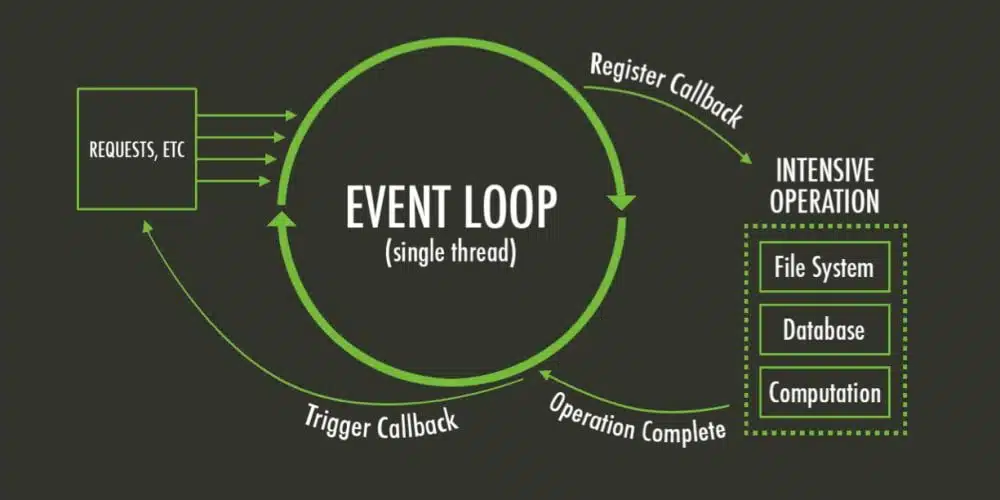

01. Difference Between Map, Filter, Foreach, Find.
Map
Defination:
The map() method allows you to iterate over an array and modify its element using callback function. The callback function will then be executed on each of the array's elements;
Filter
Defination:
Filter() method; We can use the array.filter() methood to find the element in array that meets a certain condition.
Find
Defination:
The find() method to find the first element that meets a certain condition. just like a filter methood, it takes a callback as an argument and return the first element that meets the callback condition
For-each
Defination:
Description. The forEach() method is an iterative method. It calls a provided callbackFn function once for each element in an array in ascending-index order. Unlike map() , forEach() always returns undefined and is not chainable.
02. Difference Between localStorage, sessionStorage & cookies
Local Storage
Defination:
localStorage is similar to sessionStorage, except that while localStorage data has no expiration time, sessionStorage data gets cleared when the page session ends — that is, when the page is closed. localStorage data for a document loaded in a "private browsing" or "incognito" session is cleared when the last "private" tab is closed.
Session Storage
Defination:
Session storage allows you to store data in the browser depending on the system memory and the data stored in the browser until the browser is closed. In other words, closing the browser will clear all the data stored in session storage.
Cookies Storage
Defination:
web browser will store it locally to remember the “name-value pair” that identifies you. If a user returns to that site in the future, the web browser returns that data to the web server in the form of a cookie
03. What is Event Loop?
Definition:
JavaScript has a runtime model based on an event loop, which is responsible for executing the code, collecting and processing events, and executing queued sub-tasks. This model is quite different from models in other languages like C and Java.
Event Loop Flow Chart
